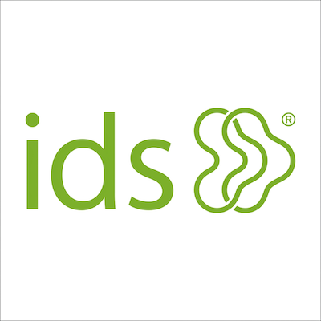
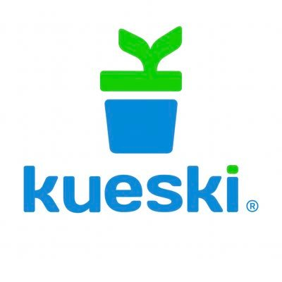

Arquitectura & Backend
- Java
- Spring Boot
- Kotlin
- REST APIs
- Microservicios
- SQL
IA Practitioner · Software Architect · Product Manager
Arquitecto de software con más de 15 años de experiencia diseñando e implementando aplicaciones empresariales complejas en plataformas web y móviles. Apasionado por las tecnologías emergentes y la IA.
Arquitecto de software senior con más de 15 años de experiencia diseñando, construyendo e implementando aplicaciones empresariales complejas. Experto en liderar proyectos desde la concepción hasta el lanzamiento, resolviendo problemas técnicos de alto nivel y mentoreando equipos de desarrollo.
Actualmente Arquitecto de Software en ids comercial TI, con experiencia previa como Product Manager en Kueski liderando iniciativas de Identity & Access Management con tecnologías como Okta, Auth0 y Veriff.
Doctor en Ciencias de la Computación por la Universidad Autónoma de Baja California. Exdirector del Campus Valle de Chalco de la UAEM y fundador de dos empresas de desarrollo de software.

Diseño e implementación de soluciones empresariales complejas. Definición de arquitectura, patrones de integración y guía técnica del equipo de desarrollo.
Ver perfil →
Liderazgo de iniciativas de IAM integrando Okta, Auth0 y Veriff. Desarrollo de un motor de búsqueda de productos con Elastic Search embebido en sitio web y app móvil.
Ver perfil →Fundador y CEO. Desarrollo de sistemas para rastreo y monitoreo de flotillas policiales, despacho de vehículos oficiales y sistemas gubernamentales de búsqueda de IDs.
Ver perfil →